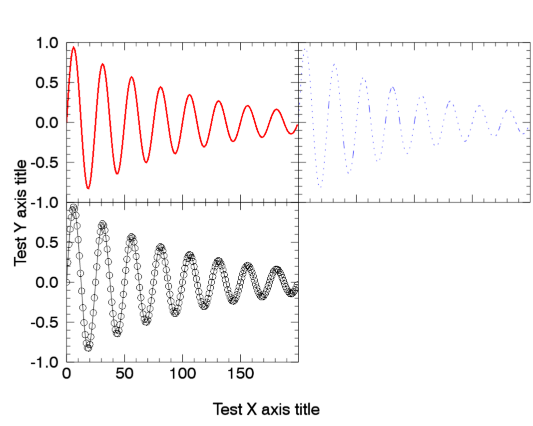
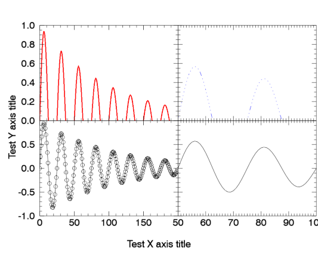

![[attach.png]](idldoc-resources/attach.png)
./
pp_multiplot__define.pro
pp_multiplot objects hold a grid of plots (from the plot function, of IDL
Graphics, not the plot procedure from direct graphics) with no empty space between lines
and columns, to use a single vertical/horizontal axis for each line/column
of plots. This was inspired by the functionality provided by multiplot from IDLAstro
(http://idlastro.gsfc.nasa.gov/ftp/pro/plot/multiplot.pro)
for direct graphics.
But contrary to multiplot, this system works for Graphics (instead of direct
graphics), allows for lines/columns of different heights/widths,
provides global margins and axes titles, and provides a synchronization
mechanism to keep the plots in the same line/column (or all) with the same
axes ranges and properties. Also, like in pp_plot, there is the option
of suppressing the first/last tick marks of the axes, to avoid their overlap
with the neighboring plots (enabled by default, depending on the plot's
location on the grid).
A pp_multiplot object makes a window to hold the grid, and will contain all the plots in the grid (made with the plot method provided here). The individual plot objects can be retrieved (for instance, to set/get their properties), and axes properties can be set (and synchronized) for entire lines/columns (or all plots in the grid) at a time. The init/get/set methods pass any extra properties to the window that contains the plot - the window class is used here, not inherited.
See the documentation on the public methods
pp_multiplot::init, pp_multiplot::plot, pp_multiplot::image,
pp_multiplot::contour, pp_multiplot::getproperty,
pp_multiplot::setproperty, pp_multiplot::sync_axes, ,pp_multiplot::close,
pp_multiplot::save, and pp_multiplot::getposition, for details on their use.
Examples
Make a simple 2x2 grid with equal sizes:
m=pp_multiplot(multi_layout=[2,2],global_xtitle='Test X axis title',global_ytitle='Test Y axis title')
;Since multi_index was not provided, this will occupy the first free location in the grid:
p0=m.plot(/test,color='red',thick=2.)
p1=m.plot(/test,color='blue',linestyle=1) ;Second location, since multi_index was omitted
p2=m.plot(/test,multi_index=2,symbol='circle') ;Third location, explicitly set with multi_index

Now, the x and y ranges on the second plot will be changed:
p1.xrange=[50,100]
p1.yrange=[0,1]
m.sync_axes,1 ;Update the axes on the plot, taking the second one as reference.
These new ranges will automatically be used when a new plot is put on that line/column:
p3=m.plot(/test,multi_index=3) ;Fourth location, explicitly set with multi_index
m.save,'pp_multiplot_ex3.pdf'
m.close

A more complicated example, with a 2x3 grid with variable widths and heights:
m=pp_multiplot(multi_layout=[2,3],lineheights=[100,200,100],columnwidths=[100,200],/absolute_dims)
p0=m.plot(/test,color='red')
p1=m.plot(/test,color='blue',xrange=[50,100])
p2=m.plot(/test,color='green',ycolor='magenta',propagate=2) ;Make ycolor extend only to the second line
p3=m.plot(/test,linestyle='dotted')
p4=m.plot(/test,symbol='square')
p5=m.plot(/test,symbol='circle')

Now to retrieve some y properties of each line:
print,m.yranges
; -0.82532734 0.93990618
; -0.82532734 0.93990618
; -0.82532734 0.93990618
print,m.ycolor
;!NULL
;magenta
;!NULL
xcolor=m.xcolor
print,xcolor
;!NULL
;!NULL
xcolor[1]='red'
m.xcolor=xcolor
m.yticklen=0.2

Save this window to a low resolution bitmap (same used in the documentation) and close it:
m.save,'pp_multiplot_ex5.png',resolution=100
m.close
props={color:'red',symbol:'square',sym_filled:1}
m=pp_multiplot(multi_layout=[1,3],graphproperties=props)
p1=m.plot(/test)
p2=m.plot(/test)
p3=m.plot(/test,color='blue')

Now, we will change the yrange in one of the panels. This will cause the axis tick labels to get recalculated, resulting in overlapping labels. This would happen even if the new yrange was identical to the current range, beacuse setting the range triggers a recalculation of the ticks:
p2.yrange=[-1,2]

The fix to that is a call to the updateranges method:
m.updateranges

Author information
- Author
Paulo Penteado (pp.penteado@gmail.com), Sep/2010
- Version
20101027
Other file information
- Requires:
IDL 8.0
Class description for pp_multiplot
Inheritance
- IDL_OBJECT
Properties
Properties in pp_multiplot
- _REF_EXTRA get init
- _extra set
- absolute_dims init
- columnwidths init
- global_margin get init
- global_xtitle get set init
- global_ytitle get set init
- graphproperties init
- lineheights init
- multi_layout get init
- title get set init
- window get
- xendticks get set
- xgap get set init
- xproperties get set
- xranges get set
- xsupressdivision init
- xtickratio init
- yendticks get set
- ygap get set init
- yproperties get set
- yranges get set
- ysupressdivision init
- ytickratio init
Fields
Fields in IDL_OBJECT
- IDL_OBJECT_BOTTOM 0LL
- IDL_OBJECT_TOP 0LL
- __OBJ__ obj_new()
Fields in pp_multiplot
- CWIDTHS obj_new()
- GLOBAL_MARGIN [0.0000000D, 0.0000000D, 0.0000000D, 0.0000000D]
- GLOBAL_TITLE ''
- GLOBAL_XTITLE obj_new()
- GLOBAL_YTITLE obj_new()
- GRAPHPROPERTIES obj_new()
- LHEIGHTS obj_new()
- MINDEX 0L
- MLAYOUT [0S, 0S]
- NCOLUMNS 0L
- NLINES 0L
- OPLOTS obj_new()
- OWINDOW obj_new()
- XENDTICKS obj_new()
- XGAP 0.0000000D
- XPROPERTIES obj_new()
- XRANGES obj_new()
- XSUPRESSDIVISION 0B
- XTICKRATIO 0.0000000D
- YENDTICKS obj_new()
- YGAP 0.0000000D
- YPROPERTIES obj_new()
- YRANGES obj_new()
- YSUPRESSDIVISION 0B
- YTICKRATIO 0.0000000D
Routines
Routines from pp_multiplot__define.pro
result = pp_multiplot::init( [_REF_EXTRA=_REF_EXTRA], multi_layout=multi_layout [, title=title] [, global_xtitle=global_xtitle] [, global_ytitle=global_ytitle] [, global_margin=global_margin] [, columnwidths=columnwidths] [, lineheights=lineheights] [, absolute_dims=absolute_dims], xgap=xgap, ygap=ygap, xsupressdivision=xsupressdivision, ysupressdivision=ysupressdivision [, graphproperties=graphproperties], xtickratio=xtickratio, ytickratio=ytickratio)Creates an object to hold a grid of plots (from the plot function, of IDL Graphics, not the plot procedure from direct graphics) with no empty space between lines and columns, to use a single vertical/horizontal axis for each line/column of plots.
result = pp_multiplot::plot( [arg1] [, arg2] [, arg3] [, TEST=TEST] [, _EXTRA=_EXTRA] [, multi_index=multi_index] [, xrange=xrange] [, yrange=yrange] [, propagate=propagate] [, xendticks=xendticks] [, yendticks=yendticks])A wrapper for plot(), which creates the plot in the proper place and with the right properties (particularly x/y ranges) in the multiplot grid, adding the object to the list of plots contained by the pp_multiplot object.
result = pp_multiplot::contour( [arg1] [, arg2] [, arg3] [, TEST=TEST] [, _EXTRA=_EXTRA] [, multi_index=multi_index] [, xrange=xrange] [, yrange=yrange] [, propagate=propagate] [, xendticks=xendticks] [, yendticks=yendticks])A wrapper for contour(), which creates the image in the proper place and with the right properties (particularly x/y ranges) in the multiplot grid, adding the object to the list of plots contained by the pp_multiplot object.
result = pp_multiplot::image( [arg1] [, arg2] [, arg3] [, TEST=TEST] [, _EXTRA=_EXTRA] [, multi_index=multi_index] [, xrange=xrange] [, yrange=yrange] [, propagate=propagate] [, xendticks=xendticks] [, yendticks=yendticks], axis_style=axis_style, aspect_ratio=aspect_ratio)A wrapper for image(), which creates the image in the proper place and with the right properties (particularly x/y ranges) in the multiplot grid, adding the object to the list of plots contained by the pp_multiplot object.
result = pp_multiplot::do_graphic( [arg1] [, arg2] [, arg3], graphic_to_do=graphic_to_do [, TEST=TEST] [, _EXTRA=_EXTRA] [, multi_index=multi_index] [, xrange=xrange] [, yrange=yrange] [, propagate=propagate] [, xendticks=xendticks] [, yendticks=yendticks])A wrapper for plot(), image() and contour(), which creates the plot in the proper place and with the right properties (particularly x/y ranges) in the multiplot grid, adding the object to the list of plots contained by the pp_multiplot object.
result = pp_multiplot::getposition(mindex, bottom=bottom, left=left, top=top, right=right, column=column, line=line)Calculates the position parameters for a plot in the grid, given its index, and the parameters set in the fields of self.
pp_multiplot::getproperty [, _ref_extra=_ref_extra] [, multi_layout=multi_layout] [, global_xtitle=global_xtitle] [, global_ytitle=global_ytitle] [, global_margin=global_margin] [, window=window] [, title=title] [, xranges=xranges] [, yranges=yranges] [, xproperties=xproperties] [, yproperties=yproperties] [, xendticks=xendticks] [, yendticks=yendticks], xgap=xgap, ygap=ygapRetrieves properties from pp_multiplot objects.
pp_multiplot::setproperty [, _extra=_extra] [, global_xtitle=global_xtitle] [, global_ytitle=global_ytitle] [, title=title] [, xranges=xranges] [, yranges=yranges] [, xproperties=xproperties] [, yproperties=yproperties] [, xendticks=xendticks] [, yendticks=yendticks], xgap=xgap, ygap=ygapSets properties for pp_multiplot objects.
pp_multiplot::sync_axes [, mindex] [, layout=layout] [, all=all]Synchronizes the axes, across a line and column, or over the whole grid, so that they have the same x/y ranges, and, optionally, the same set x/y axes properties.
pp_multiplot::decideintervals, dprange, dticks, dint, decide=decide, newrange=newrange, dminor=dminor, newdticks=newdtickspp_multiplot::updateranges, x=x, y=yThis method should be called after one or more plots in the multiplot had its axes changed in a way that caused its ticks to be recomputed (setting the range, for instance), so that the end ticks get fixed.
pp_multiplot::closeSimple wrapper for window::close, to make pp_multiplot objects look almost like they inherited the window class they use.
pp_multiplot::save, filename, _REF_EXTRA=_REF_EXTRASimple wrapper for window::save, to make pp_multiplot objects look almost like they inherited the window class they use.
pp_multiplot__defineClass definition for pp_multiplot.
Routine details
top source pp_multiplot::init
result = pp_multiplot::init( [_REF_EXTRA=_REF_EXTRA], multi_layout=multi_layout [, title=title] [, global_xtitle=global_xtitle] [, global_ytitle=global_ytitle] [, global_margin=global_margin] [, columnwidths=columnwidths] [, lineheights=lineheights] [, absolute_dims=absolute_dims], xgap=xgap, ygap=ygap, xsupressdivision=xsupressdivision, ysupressdivision=ysupressdivision [, graphproperties=graphproperties], xtickratio=xtickratio, ytickratio=ytickratio)
Creates an object to hold a grid of plots (from the plot function, of IDL
Graphics, not the plot procedure from direct graphics) with no empty space between lines
and columns, to use a single vertical/horizontal axis for each line/column
of plots. See the description of the class pp_multiplot for details
and examples.
Keywords
- _REF_EXTRA in out optional
Any extra properties are just passed to window() (the init method of the window class). The most common to be used is probably going to be dimensions. See the help on window() for more information.
- multi_layout in required
The layout of the grid to create, as a 2-element array [ncolumns, nlines], with the number of columns and the number of lines for the grid.
- title in optional
The title for the entire plot (passed on to the window object).
- global_xtitle in optional
The common title for all the x axes, so that a same title does not have to be shown repeatedly below every column.
- global_ytitle in optional
The common title for all the y axes, so that a same title does not have to be shown repeatedly on the left of every line.
- global_margin in optional
The margins, in normalized units (range 0 to 1) to be given around the grid. Provided as a 4-element array, for [left, bottom, right, top] margins. Defaults to [0.125d0,0.15d0,0.005d0,0.1d0].
- columnwidths in optional
If set to an array with the same number of elements as the number of grid columns, specifies the width to use for each plot column. If not provided, equal widths are used. The units are arbitrary, as only their relative values is used, unless
absolute_dimsis set, in which case the units are the same as window()'s dimensions.- lineheights in optional
If set to an array with the same number of elements as the number of grid lines, specifies the height to use for each plot column. If not provided, equal heights are used. The units are arbitrary, as only their relative values is used, unless
absolute_dimsis set, in which case the units are the same as window()'s dimensions.- absolute_dims in optional default=0
If set, causes
columnwidthsandlineheightsto be interpreted as absolute, rather than relative values. In that case, their units are the same as those used by window()'s dimensions.- xgap
- ygap
- xsupressdivision
- ysupressdivision
- graphproperties in optional
Use this keyword to provide a set of graphic keywords to be passed to all individual graphs by default. It should be in the form of a structure, with each field containing the value for the keyword of corresponding name. If an individual graph's creation specifies a value for a keyword given in graphproperties, it will take precendece over the graphproperties value. See examples above.
- xtickratio
- ytickratio
Statistics
| Lines: | 57 lines |
| Cyclomatic complexity: | 23 |
| Modified cyclomatic complexity: | 23 |
top source pp_multiplot::plot
result = pp_multiplot::plot( [arg1] [, arg2] [, arg3] [, TEST=TEST] [, _EXTRA=_EXTRA] [, multi_index=multi_index] [, xrange=xrange] [, yrange=yrange] [, propagate=propagate] [, xendticks=xendticks] [, yendticks=yendticks])
A wrapper for plot(), which creates the plot in the proper place and with the right properties (particularly x/y ranges) in the multiplot grid, adding the object to the list of plots contained by the pp_multiplot object.
Return value
The plot object created in the multiplot grid. This is a regular object of
IDL's plot class, and can be manipulated in the usual way. The method
pp_multiplot::sync_axes can be used to synchronize axes properties across
a line/column or all plots, after one plot has been changed (programmatically
or interactively).
Parameters
- arg1 in optional
The first argument to be passed on to plot(). See the help on plot() for details.
- arg2 in optional
The second argument to be passed on to plot(). See the help on plot() for details.
- arg3 in optional
The third argument to be passed on to plot(). See the help on plot() for details.
Keywords
- TEST in optional default=0
Passed on to plot(), to make plot() used the test data instead.
- _EXTRA in optional
Any keywords not handled by this method are passed on to plot(). See the help on plot() for details.
The following properties are axes properties, that can be made common across columns (x) or lines (y) with the keyword
propagate. See the help on plot objects for details:[XY]COLOR, [XY]GRIDSTYLE, [XY]LOG, [XY]MAJOR, [XY]MINOR, [XY]SUBTICKLEN, [XY]TEXT_COLOR, [XY]TEXT_POS, [XY]THICK, [XY]TICKDIR, [XY]TICKFONT_NAME, [XY]TICKFONT_SIZE, [XY]TICKFONT_STYLE, [XY]TICKFORMAT, [XY]TICKINTERVAL, [XY]TICKLAYOUT, [XY]TICKLEN, [XY]TICKNAME, [XY]TICKUNITS, [XY]TICKVALUES, [XY]TITLE, [XY]TRANSPARENCY
- multi_index in optional
The index of the position to place the plot in the grid. Count starts at 0, on the top left, proceeding left-to-right, then top-to-bottom, up to nlines*ncolumns-1.
- xrange in optional
A 2-element array with the minimum and maximum to use for the x axis. If not provided, the xrange set for the current column is used, or, if no range was set for the column, the plot is created with the default range (determined by plot()), and that range is subsequently set for the column The other plots in the column have their ranges updated, if necessary.
- yrange in optional
A 2-element array with the minimum and maximum to use for the y axis. If not provided, the xrange set for the current line is used, or, if no range was set for the line, the plot is created with the default range (determined by plot()), and that range is subsequently set for the line The other plots in the line have their ranges updated, if necessary.
- propagate in optional default=1
Determines the mode of propagating the axes properties (range and endticks not included) of this plot. If 0, no propagation of properties is done. If 1, properties are propagated to all plots in the grid. If 2, properties are propagated to all plots in the same line/column.
- xendticks in optional
The mode set for suppressing the first/last x tick labels of the plot: 0 means that both the first and last labels are suppressed, 1 means that only the last label is suppressed, 2 means that only the first label is suppressed, and 3 means that neither is suppressed. The default for each plot depends on its location on the multiplot grid (its mindex): Plots have their last label suppressed (xendticks=1), except for those that fall on the rightmost column (xendticks=3).
- yendticks in optional
The mode set for suppressing the first/last y tick labels of the plot: 0 means that both the first and last labels are suppressed, 1 means that only the last label is suppressed, 2 means that only the first label is suppressed, and 3 means that neither is suppressed. The default for each plot depends on its location on the multiplot grid (its mindex): Plots have their last label suppressed (yendticks=1), except for those that fall on the top line (yendticks=3).
Statistics
| Lines: | 21 lines |
| Cyclomatic complexity: | 7 |
| Modified cyclomatic complexity: | 3 |
top source pp_multiplot::contour
result = pp_multiplot::contour( [arg1] [, arg2] [, arg3] [, TEST=TEST] [, _EXTRA=_EXTRA] [, multi_index=multi_index] [, xrange=xrange] [, yrange=yrange] [, propagate=propagate] [, xendticks=xendticks] [, yendticks=yendticks])
A wrapper for contour(), which creates the image in the proper place and with the right properties (particularly x/y ranges) in the multiplot grid, adding the object to the list of plots contained by the pp_multiplot object.
Return value
The contour object created in the multiplot grid. This is a regular object of
IDL's image class, and can be manipulated in the usual way. The method
pp_multiplot::sync_axes can be used to synchronize axes properties across
a line/column or all plots, after one plot has been changed (programmatically
or interactively).
Parameters
- arg1 in optional
The first argument to be passed on to plot(). See the help on plot() for details.
- arg2 in optional
The second argument to be passed on to plot(). See the help on plot() for details.
- arg3 in optional
The third argument to be passed on to plot(). See the help on plot() for details.
Keywords
- TEST in optional default=0
Passed on to plot(), to make plot() used the test data instead.
- _EXTRA in optional
Any keywords not handled by this method are passed on to plot(). See the help on plot() for details.
The following properties are axes properties, that can be made common across columns (x) or lines (y) with the keyword
propagate. See the help on plot objects for details:[XY]COLOR, [XY]GRIDSTYLE, [XY]LOG, [XY]MAJOR, [XY]MINOR, [XY]SUBTICKLEN, [XY]TEXT_COLOR, [XY]TEXT_POS, [XY]THICK, [XY]TICKDIR, [XY]TICKFONT_NAME, [XY]TICKFONT_SIZE, [XY]TICKFONT_STYLE, [XY]TICKFORMAT, [XY]TICKINTERVAL, [XY]TICKLAYOUT, [XY]TICKLEN, [XY]TICKNAME, [XY]TICKUNITS, [XY]TICKVALUES, [XY]TITLE, [XY]TRANSPARENCY
- multi_index in optional
The index of the position to place the plot in the grid. Count starts at 0, on the top left, proceeding left-to-right, then top-to-bottom, up to nlines*ncolumns-1.
- xrange in optional
A 2-element array with the minimum and maximum to use for the x axis. If not provided, the xrange set for the current column is used, or, if no range was set for the column, the plot is created with the default range (determined by plot()), and that range is subsequently set for the column The other plots in the column have their ranges updated, if necessary.
- yrange in optional
A 2-element array with the minimum and maximum to use for the y axis. If not provided, the xrange set for the current line is used, or, if no range was set for the line, the plot is created with the default range (determined by plot()), and that range is subsequently set for the line The other plots in the line have their ranges updated, if necessary.
- propagate in optional default=1
Determines the mode of propagating the axes properties (range and endticks not included) of this plot. If 0, no propagation of properties is done. If 1, properties are propagated to all plots in the grid. If 2, properties are propagated to all plots in the same line/column.
- xendticks in optional
The mode set for suppressing the first/last x tick labels of the plot: 0 means that both the first and last labels are suppressed, 1 means that only the last label is suppressed, 2 means that only the first label is suppressed, and 3 means that neither is suppressed. The default for each plot depends on its location on the multiplot grid (its mindex): Plots have their last label suppressed (xendticks=1), except for those that fall on the rightmost column (xendticks=3).
- yendticks in optional
The mode set for suppressing the first/last y tick labels of the plot: 0 means that both the first and last labels are suppressed, 1 means that only the last label is suppressed, 2 means that only the first label is suppressed, and 3 means that neither is suppressed. The default for each plot depends on its location on the multiplot grid (its mindex): Plots have their last label suppressed (yendticks=1), except for those that fall on the top line (yendticks=3).
Statistics
| Lines: | 21 lines |
| Cyclomatic complexity: | 7 |
| Modified cyclomatic complexity: | 3 |
top source pp_multiplot::image
result = pp_multiplot::image( [arg1] [, arg2] [, arg3] [, TEST=TEST] [, _EXTRA=_EXTRA] [, multi_index=multi_index] [, xrange=xrange] [, yrange=yrange] [, propagate=propagate] [, xendticks=xendticks] [, yendticks=yendticks], axis_style=axis_style, aspect_ratio=aspect_ratio)
A wrapper for image(), which creates the image in the proper place and with the right properties (particularly x/y ranges) in the multiplot grid, adding the object to the list of plots contained by the pp_multiplot object.
Return value
The image object created in the multiplot grid. This is a regular object of
IDL's image class, and can be manipulated in the usual way. The method
pp_multiplot::sync_axes can be used to synchronize axes properties across
a line/column or all plots, after one plot has been changed (programmatically
or interactively).
Parameters
- arg1 in optional
The first argument to be passed on to plot(). See the help on plot() for details.
- arg2 in optional
The second argument to be passed on to plot(). See the help on plot() for details.
- arg3 in optional
The third argument to be passed on to plot(). See the help on plot() for details.
Keywords
- TEST in optional default=0
Passed on to plot(), to make plot() used the test data instead.
- _EXTRA in optional
Any keywords not handled by this method are passed on to plot(). See the help on plot() for details.
The following properties are axes properties, that can be made common across columns (x) or lines (y) with the keyword
propagate. See the help on plot objects for details:[XY]COLOR, [XY]GRIDSTYLE, [XY]LOG, [XY]MAJOR, [XY]MINOR, [XY]SUBTICKLEN, [XY]TEXT_COLOR, [XY]TEXT_POS, [XY]THICK, [XY]TICKDIR, [XY]TICKFONT_NAME, [XY]TICKFONT_SIZE, [XY]TICKFONT_STYLE, [XY]TICKFORMAT, [XY]TICKINTERVAL, [XY]TICKLAYOUT, [XY]TICKLEN, [XY]TICKNAME, [XY]TICKUNITS, [XY]TICKVALUES, [XY]TITLE, [XY]TRANSPARENCY
- multi_index in optional
The index of the position to place the plot in the grid. Count starts at 0, on the top left, proceeding left-to-right, then top-to-bottom, up to nlines*ncolumns-1.
- xrange in optional
A 2-element array with the minimum and maximum to use for the x axis. If not provided, the xrange set for the current column is used, or, if no range was set for the column, the plot is created with the default range (determined by plot()), and that range is subsequently set for the column The other plots in the column have their ranges updated, if necessary.
- yrange in optional
A 2-element array with the minimum and maximum to use for the y axis. If not provided, the xrange set for the current line is used, or, if no range was set for the line, the plot is created with the default range (determined by plot()), and that range is subsequently set for the line The other plots in the line have their ranges updated, if necessary.
- propagate in optional default=1
Determines the mode of propagating the axes properties (range and endticks not included) of this plot. If 0, no propagation of properties is done. If 1, properties are propagated to all plots in the grid. If 2, properties are propagated to all plots in the same line/column.
- xendticks in optional
The mode set for suppressing the first/last x tick labels of the plot: 0 means that both the first and last labels are suppressed, 1 means that only the last label is suppressed, 2 means that only the first label is suppressed, and 3 means that neither is suppressed. The default for each plot depends on its location on the multiplot grid (its mindex): Plots have their last label suppressed (xendticks=1), except for those that fall on the rightmost column (xendticks=3).
- yendticks in optional
The mode set for suppressing the first/last y tick labels of the plot: 0 means that both the first and last labels are suppressed, 1 means that only the last label is suppressed, 2 means that only the first label is suppressed, and 3 means that neither is suppressed. The default for each plot depends on its location on the multiplot grid (its mindex): Plots have their last label suppressed (yendticks=1), except for those that fall on the top line (yendticks=3).
- axis_style
- aspect_ratio
Statistics
| Lines: | 23 lines |
| Cyclomatic complexity: | 9 |
| Modified cyclomatic complexity: | 5 |
top source pp_multiplot::do_graphic
result = pp_multiplot::do_graphic( [arg1] [, arg2] [, arg3], graphic_to_do=graphic_to_do [, TEST=TEST] [, _EXTRA=_EXTRA] [, multi_index=multi_index] [, xrange=xrange] [, yrange=yrange] [, propagate=propagate] [, xendticks=xendticks] [, yendticks=yendticks])
A wrapper for plot(), image() and contour(), which creates the plot in the proper place and with the right properties (particularly x/y ranges) in the multiplot grid, adding the object to the list of plots contained by the pp_multiplot object.
Return value
The plot object created in the multiplot grid. This is a regular object of
IDL's plot class, and can be manipulated in the usual way. The method
pp_multiplot::sync_axes can be used to synchronize axes properties across
a line/column or all plots, after one plot has been changed (programmatically
or interactively).
Parameters
- arg1 in optional
The first argument to be passed on to plot(). See the help on plot() for details.
- arg2 in optional
The second argument to be passed on to plot(). See the help on plot() for details.
- arg3 in optional
The third argument to be passed on to plot(). See the help on plot() for details.
Keywords
- graphic_to_do
- TEST in optional default=0
Passed on to plot(), to make plot() used the test data instead.
- _EXTRA in optional
Any keywords not handled by this method are passed on to plot(). See the help on plot() for details.
The following properties are axes properties, that can be made common across columns (x) or lines (y) with the keyword
propagate. See the help on plot objects for details:[XY]COLOR, [XY]GRIDSTYLE, [XY]LOG, [XY]MAJOR, [XY]MINOR, [XY]SUBTICKLEN, [XY]TEXT_COLOR, [XY]TEXT_POS, [XY]THICK, [XY]TICKDIR, [XY]TICKFONT_NAME, [XY]TICKFONT_SIZE, [XY]TICKFONT_STYLE, [XY]TICKFORMAT, [XY]TICKINTERVAL, [XY]TICKLAYOUT, [XY]TICKLEN, [XY]TICKNAME, [XY]TICKUNITS, [XY]TICKVALUES, [XY]TITLE, [XY]TRANSPARENCY
- multi_index in optional
The index of the position to place the plot in the grid. Count starts at 0, on the top left, proceeding left-to-right, then top-to-bottom, up to nlines*ncolumns-1.
- xrange in optional
A 2-element array with the minimum and maximum to use for the x axis. If not provided, the xrange set for the current column is used, or, if no range was set for the column, the plot is created with the default range (determined by plot()), and that range is subsequently set for the column The other plots in the column have their ranges updated, if necessary.
- yrange in optional
A 2-element array with the minimum and maximum to use for the y axis. If not provided, the xrange set for the current line is used, or, if no range was set for the line, the plot is created with the default range (determined by plot()), and that range is subsequently set for the line The other plots in the line have their ranges updated, if necessary.
- propagate in optional default=1
Determines the mode of propagating the axes properties (range and endticks not included) of this plot. If 0, no propagation of properties is done. If 1, properties are propagated to all plots in the grid. If 2, properties are propagated to all plots in the same line/column.
- xendticks in optional
The mode set for suppressing the first/last x tick labels of the plot: 0 means that both the first and last labels are suppressed, 1 means that only the last label is suppressed, 2 means that only the first label is suppressed, and 3 means that neither is suppressed. The default for each plot depends on its location on the multiplot grid (its mindex): Plots have their last label suppressed (xendticks=1), except for those that fall on the rightmost column (xendticks=3).
- yendticks in optional
The mode set for suppressing the first/last y tick labels of the plot: 0 means that both the first and last labels are suppressed, 1 means that only the last label is suppressed, 2 means that only the first label is suppressed, and 3 means that neither is suppressed. The default for each plot depends on its location on the multiplot grid (its mindex): Plots have their last label suppressed (yendticks=1), except for those that fall on the top line (yendticks=3).
Statistics
| Lines: | 80 lines |
| Cyclomatic complexity: | 35 |
| Modified cyclomatic complexity: | 27 |
top source pp_multiplot::getposition
result = pp_multiplot::getposition(mindex, bottom=bottom, left=left, top=top, right=right, column=column, line=line)
Calculates the position parameters for a plot in the grid, given its index,
and the parameters set in the fields of self. For use of plot objects, use
pp_multiplot::plot directly, which already uses this method to compute the
location in the grid. This method can be useful if one wants to add another
type of Graphic (not a plot object) into the grid, such as an image or a contour.
Return value
The position array to be passed on to plot, to create this plot on the proper place in the multiplot window. Contains [x0,y0,x1,y1], where the first two refer to the lower-left corner, and the last two refer to the top-right corner, with x counting from the left, and y counting from the bottom.
Parameters
- mindex in required
The grid index of the plot being created, from 0 to ncolumns*nlines-1.
Keywords
- bottom out
Indicates whether this plot is in the bottom line of the grid.
- left out
Indicates whether this plot is in the left column of the grid.
- top out
Indicates whether this plot is in the top line of the grid.
- right out
Indicates whether this plot is in the right column of the grid.
- column out
The column where this plot lies on the grid (starting from 0).
- line out
The line where this plot lies on the grid (starting from 0).
Statistics
| Lines: | 16 lines |
| Cyclomatic complexity: | 2 |
| Modified cyclomatic complexity: | 2 |
top source pp_multiplot::getproperty
pp_multiplot::getproperty [, _ref_extra=_ref_extra] [, multi_layout=multi_layout] [, global_xtitle=global_xtitle] [, global_ytitle=global_ytitle] [, global_margin=global_margin] [, window=window] [, title=title] [, xranges=xranges] [, yranges=yranges] [, xproperties=xproperties] [, yproperties=yproperties] [, xendticks=xendticks] [, yendticks=yendticks], xgap=xgap, ygap=ygap
Retrieves properties from pp_multiplot objects. Since pp_multiplot inherits from IDL_Object, these properties can be accessed with the dot (.) operator. The extra properties not handled here are passed on to the getproperty method of the window object (which contains the plots).
Keywords
- _ref_extra out optional
Any keywords not handled by this method are passed on to the getproperty method of the window object. See the help on window objects for details.
The following properties are axes properties, that can be made common across columns (x) or lines (y). They are from the plot objects, and are returned as a list, with one element for each column (x) or line (y). See the help on plot objects for details:
[XY]COLOR, [XY]GRIDSTYLE, [XY]LOG, [XY]MAJOR, [XY]MINOR, [XY]SUBTICKLEN, [XY]TEXT_COLOR, [XY]TEXT_POS, [XY]THICK, [XY]TICKDIR, [XY]TICKFONT_NAME, [XY]TICKFONT_SIZE, [XY]TICKFONT_STYLE, [XY]TICKFORMAT, [XY]TICKINTERVAL, [XY]TICKLAYOUT, [XY]TICKLEN, [XY]TICKNAME, [XY]TICKUNITS, [XY]TICKVALUES, [XY]TITLE, [XY]TRANSPARENCY
- multi_layout out optional
The layout of the grid, as a 2-element array with the number of columns and the number of lines for the grid.
- global_xtitle out optional
The common title for all the x axes.
- global_ytitle out optional
The common title for all the y axes.
- global_margin out optional
The margins, in normalized units (range 0 to 1) around the grid. Returned as a 4-element array, for [left, bottom, right, top] margins.
- window out optional
The window object, which contains the plots.
- title out optional
The title for the entire plot (which resides in the window object).
- xranges out optional
A list, with one element for each column, each being a 2-element array with the minimum and maximum of the x axes for the plots on each column.
- yranges out optional
A list, with one element for each line, each being a 2-element array with the minimum and maximum of the y axes for the plots on each line.
- xproperties out optional
A list, with one element for each column, each being a hash with the x axes' properties that have been set for the plots on each column. On columns with no properties set, the hash is empty.
- yproperties out optional
A list, with one element for each line, each being a hash with the y axes' properties that have been set for the plots on each line. On lines with no properties set, the hash is empty.
- xendticks out optional
A list, with one element for each column, each being the mode set for suppressing the first/last x tick labels of the corresponding plot: 0 means that both the first and last labels are suppressed, 1 means that only the last label is suppressed, 2 means that only the first label is suppressed, and 3 means that neither is suppressed. The default for each plot depends on its location on the multiplot grid (its mindex): Plots have their last label suppressed (xendticks=1), except for those that fall on the rightmost column (xendticks=3).
- yendticks out optional
A list, with one element for each column, each being the mode set for suppressing the first/last y tick labels of the corresponding plot: 0 means that both the first and last labels are suppressed, 1 means that only the last label is suppressed, 2 means that only the first label is suppressed, and 3 means that neither is suppressed. The default for each plot depends on its location on the multiplot grid (its mindex): Plots have their last label suppressed (yendticks=1), except for those that fall on the top line (yendticks=3).
- xgap
- ygap
Statistics
| Lines: | 30 lines |
| Cyclomatic complexity: | 17 |
| Modified cyclomatic complexity: | 17 |
top source pp_multiplot::setproperty
pp_multiplot::setproperty [, _extra=_extra] [, global_xtitle=global_xtitle] [, global_ytitle=global_ytitle] [, title=title] [, xranges=xranges] [, yranges=yranges] [, xproperties=xproperties] [, yproperties=yproperties] [, xendticks=xendticks] [, yendticks=yendticks], xgap=xgap, ygap=ygap
Sets properties for pp_multiplot objects. Since pp_multiplot inherits from IDL_Object, these properties can be accessed with the dot (.) operator. The extra properties not handled here are passed on to the setproperty method of the window object (which contains the plots).
Keywords
- _extra in optional
Any keywords not handled by this method are passed on to the getproperty method of the window object. See the help on window objects for details.
The following properties are axes properties, that can be made common across columns (x) or lines (y). They are for the plot objects, and are set as either a list, with one element for each column (x) or line (y), or a single property, to be replicated for all plots in the column/line. See the help on plot objects for details:
[XY]COLOR, [XY]GRIDSTYLE, [XY]LOG, [XY]MAJOR, [XY]MINOR, [XY]SUBTICKLEN, [XY]TEXT_COLOR, [XY]TEXT_POS, [XY]THICK, [XY]TICKDIR, [XY]TICKFONT_NAME, [XY]TICKFONT_SIZE, [XY]TICKFONT_STYLE, [XY]TICKFORMAT, [XY]TICKINTERVAL, [XY]TICKLAYOUT, [XY]TICKLEN, [XY]TICKNAME, [XY]TICKUNITS, [XY]TICKVALUES, [XY]TITLE, [XY]TRANSPARENCY
- global_xtitle in optional
The common title for all the x axes.
- global_ytitle in optional
The common title for all the y axes.
- title in optional
The title for the entire plot (which resides in the window object).
- xranges in optional
The minimum and maximum of the x axes for the plots on each column. Provided as either a list, with one element for each column, each being a 2-element array, or a 2-element array, to be applied for all columns, or as a [2,ncolumns] array, with the minimum and maximum for each column.
- yranges in optional
The minimum and maximum of the y axes for the plots on each line. Provided as either a list, with one element for each line, each being a 2-element array, or a 2-element array, to be applied for all lines, or as a [2,nlines] array, with the minimum and maximum for each line.
- xproperties in optional
The x axes' properties that are set for the plots on each column. Provided as either a list, with one element for each column, each being a hash with the properties/values as keys/values, or a single hash, to be applied for all columns.
- yproperties in optional
The y axes' properties that are set for the plots on each line. Provided as either a list, with one element for each line, each being a hash with the properties/values as keys/values, or a single hash, to be applied for all lines.
- xendticks in optional
The modes for suppressing the first/last x tick labels of the corresponding plots: 0 means that both the first and last labels are suppressed, 1 means that only the last label is suppressed, 2 means that only the first label is suppressed, and 3 means that neither is suppressed. Provided as either a nlines*ncolumns array, with one element for each plot, or as a scalar, to be applied the same for all plots.
- yendticks in optional
The modes for suppressing the first/last y tick labels of the corresponding plots: 0 means that both the first and last labels are suppressed, 1 means that only the last label is suppressed, 2 means that only the first label is suppressed, and 3 means that neither is suppressed. Provided as either a nlines*ncolumns array, with one element for each plot, or as a scalar, to be applied the same for all plots.
- xgap
- ygap
Statistics
| Lines: | 91 lines |
| Cyclomatic complexity: | 56 |
| Modified cyclomatic complexity: | 56 |
top source pp_multiplot::sync_axes
pp_multiplot::sync_axes [, mindex] [, layout=layout] [, all=all]
Synchronizes the axes, across a line and column, or over the whole grid, so that they have the same x/y ranges, and, optionally, the same set x/y axes properties.
Parameters
- mindex in optional
If provided, uses the plot at position mindex (count starts from 0) as the reference for the axes. If not provided, the currently selected plot is used. If the index is not provided and none are selected, the first valid plot is used.
Keywords
- layout in optional default=0
If set, not only the ranges are synchronized, but also the x/y axes layouts, from those properties that have been set (in xproperties and xyproperties).
- all in optional default=0
If set, synchronization is carried out on all plots in the grid, instead of only to those at the same line and same column as the plot used as reference.
Examples
See the documentation on the method pp_multiplot::plot for examples.
Statistics
| Lines: | 52 lines |
| Cyclomatic complexity: | 18 |
| Modified cyclomatic complexity: | 18 |
top source pp_multiplot::decideintervals
pp_multiplot::decideintervals, dprange, dticks, dint, decide=decide, newrange=newrange, dminor=dminor, newdticks=newdticks
Parameters
- dprange
- dticks
- dint
Keywords
- decide
- newrange
- dminor
- newdticks
Statistics
| Lines: | 26 lines |
| Cyclomatic complexity: | 5 |
| Modified cyclomatic complexity: | 5 |
top source pp_multiplot::updateranges
pp_multiplot::updateranges, x=x, y=y
This method should be called after one or more plots in the multiplot had its axes changed in a way that caused its ticks to be recomputed (setting the range, for instance), so that the end ticks get fixed.
Keywords
- x
- y
Statistics
| Lines: | 29 lines |
| Cyclomatic complexity: | 8 |
| Modified cyclomatic complexity: | 8 |
top source pp_multiplot::close
pp_multiplot::close
Simple wrapper for window::close, to make pp_multiplot objects look almost like they inherited the window class they use. For more details, see the help on the close method of IDL's Graphics.
Statistics
| Lines: | 4 lines |
| Cyclomatic complexity: | 2 |
| Modified cyclomatic complexity: | 2 |
top source pp_multiplot::save
pp_multiplot::save, filename, _REF_EXTRA=_REF_EXTRA
Simple wrapper for window::save, to make pp_multiplot objects look almost like they inherited the window class they use. For more details, see the help on the save method of IDL's Graphics.
Parameters
- filename
Passed on to window::save, the name for the file to create. Its extension determines the type of file to be produced. See the help window::save for more details.
Keywords
- _REF_EXTRA
Any keywords are passed on, unaltered, to window::save. See the help on the window::save for details.
Author information
- Author:
Paulo Penteado (pp.penteado@gmail.com), 2010
Statistics
| Lines: | 4 lines |
| Cyclomatic complexity: | 2 |
| Modified cyclomatic complexity: | 2 |
top source pp_multiplot__define
pp_multiplot__define
Class definition for pp_multiplot.
Statistics
| Lines: | 17 lines |
| Cyclomatic complexity: | 25 |
| Modified cyclomatic complexity: | 25 |
File attributes
| Modification date: | Sun Sep 25 22:35:48 2016 |
| Lines: | 655 |
| Docformat: | rst rst |